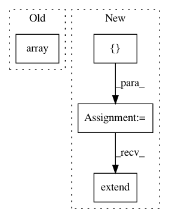

38ae11948794e2b7873d7fa053321c1cf67929ff,pyannote/audio/augmentation/noise.py,AddNoise,__init__,#AddNoise#Any#Any#Any#Any#,56
Before Change
for current_file in protocol.files():
self.filenames_.append(current_file["audio"])
self.durations_.append(get_audio_duration(current_file))
self.durations_ = np.array(self.durations_)
def normalize(self, waveform):
return waveform / (np.sqrt(np.mean(waveform ** 2)) + 1e-8)
After Change
self.snr_max = snr_max
// load noise database
self.files_ = []
preprocessors = {"audio": FileFinder(config_yml=db_yml),
"duration": get_audio_duration}
for collection in self.collection:
protocol = get_protocol(collection, preprocessors=preprocessors)
self.files_.extend(protocol.files())
def normalize(self, waveform):
return waveform / (np.sqrt(np.mean(waveform ** 2)) + 1e-8)
In pattern: SUPERPATTERN
Frequency: 3
Non-data size: 4
Instances
Project Name: pyannote/pyannote-audio
Commit Name: 38ae11948794e2b7873d7fa053321c1cf67929ff
Time: 2018-11-30
Author: bredin@limsi.fr
File Name: pyannote/audio/augmentation/noise.py
Class Name: AddNoise
Method Name: __init__
Project Name: dit/dit
Commit Name: 00cd073d5b81bfe7a3083e1062fa989b2a47c0b4
Time: 2015-02-24
Author: chebee7i@gmail.com
File Name: dit/cdisthelpers.py
Class Name:
Method Name: joint_from_factors
Project Name: automl/auto-sklearn
Commit Name: de074e29f36c33d5a8627f9e8ab92f1e0fd46d82
Time: 2014-12-15
Author: feurerm@informatik.uni-freiburg.de
File Name: AutoSklearn/implementations/OneHotEncoder.py
Class Name: OneHotEncoder
Method Name: _fit_transform